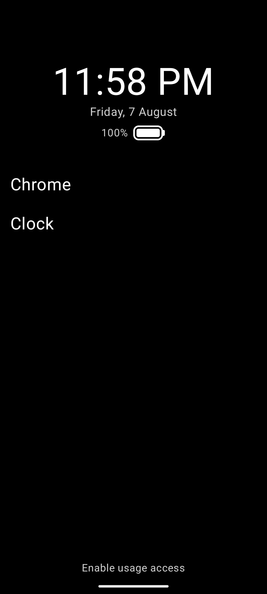
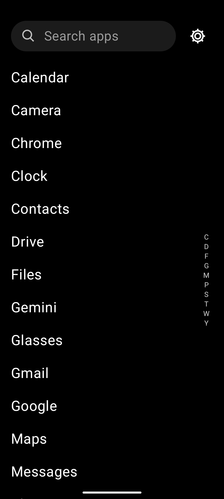
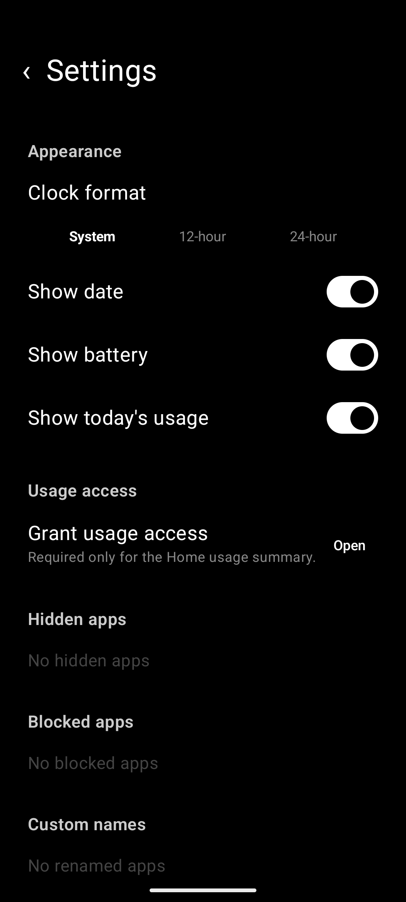

Your home screen, without the noise.
A fast, text-first Android launcher that keeps favorite apps close and everything else one swipe away. No ads, no account and no internet permission.
Android 8.0+ · local preferences · zero telemetry

Only what earns a place.
Build a calm home screen around text, not attention-grabbing icon grids. Add only the apps and folders you want, then arrange them in the order that works for you.
- ✓ Configurable clock, date, battery and daily usage
- ✓ Favorite apps and folders in one ordered list
- ✓ Long-press and drag to reorder Home items
- ✓ Five accent colors, three fonts and three text sizes

Every app. Zero hunting.
Swipe left for the complete app list. Search immediately, scrub the alphabet rail or expand folders inline without leaving the drawer.
Make the launcher yours.
Rename apps, create folders, hide distractions or block an app from opening inside the launcher. Restore every choice later from one settings screen.
Clock format, font, size, accent and Home details.
Rename, hide, block, uninstall or open Android app info.
Create, rename, fill and place them on Home.
Optional daily screen time using Android Usage Access.

Your choices stay on your device.
Launcher preferences live in Android DataStore. There is no hosted service, telemetry SDK or network permission. Usage Access is optional and only calculates today's foreground-app time locally.
Make Android feel quiet again.
Grab the latest APK or build it from source. No account, no ads and no telemetry.